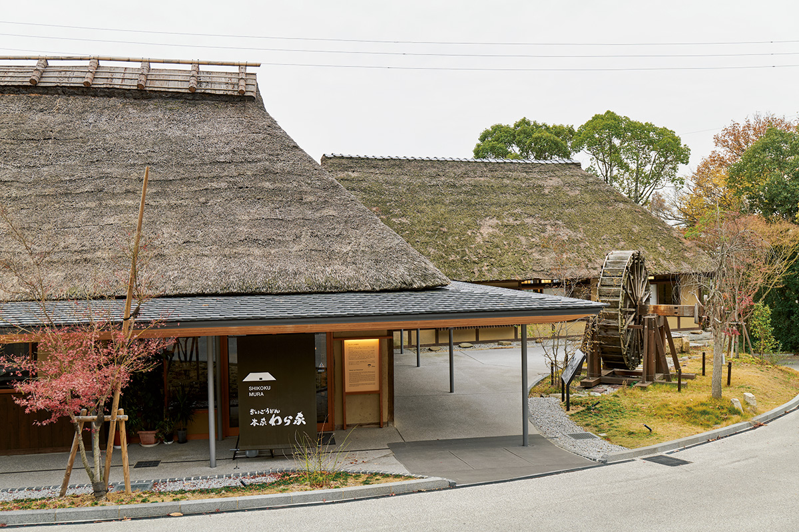
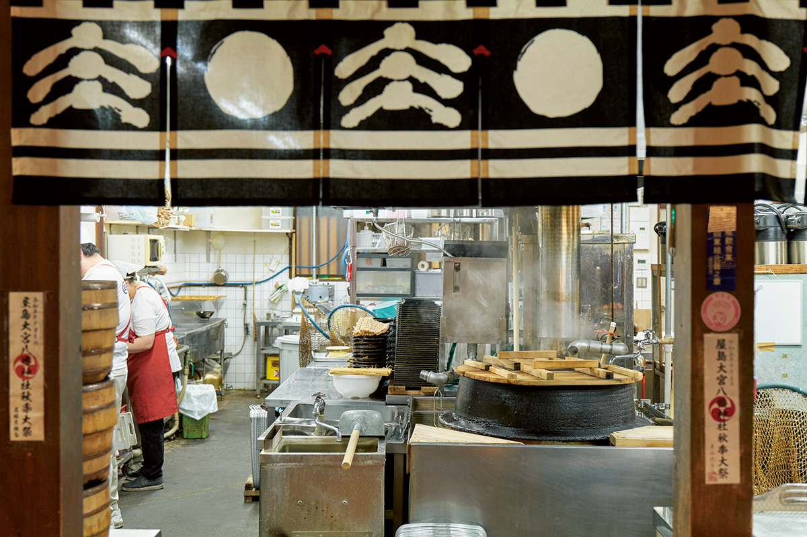
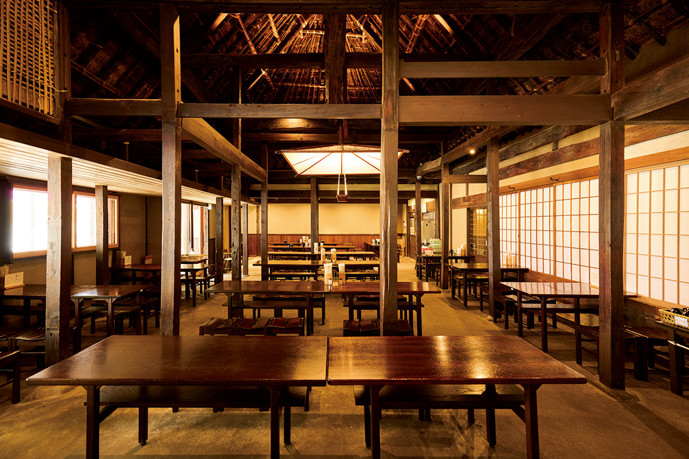
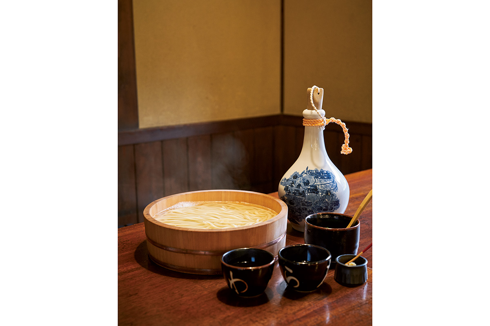
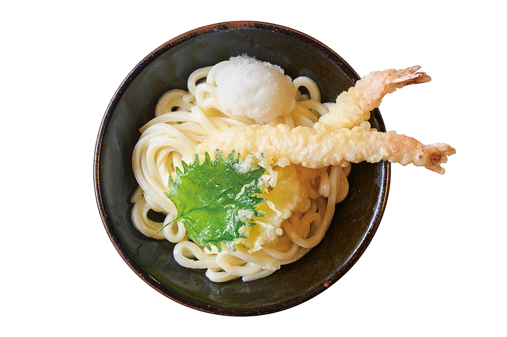
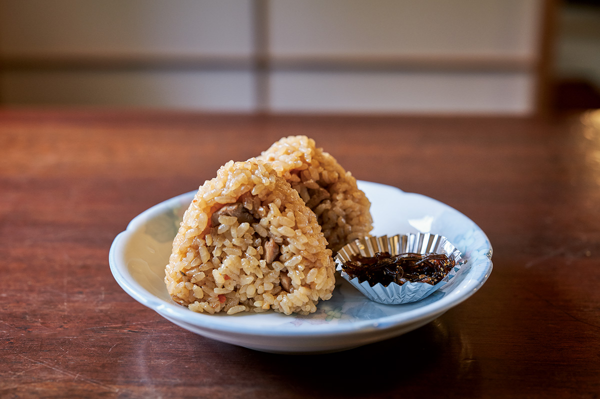
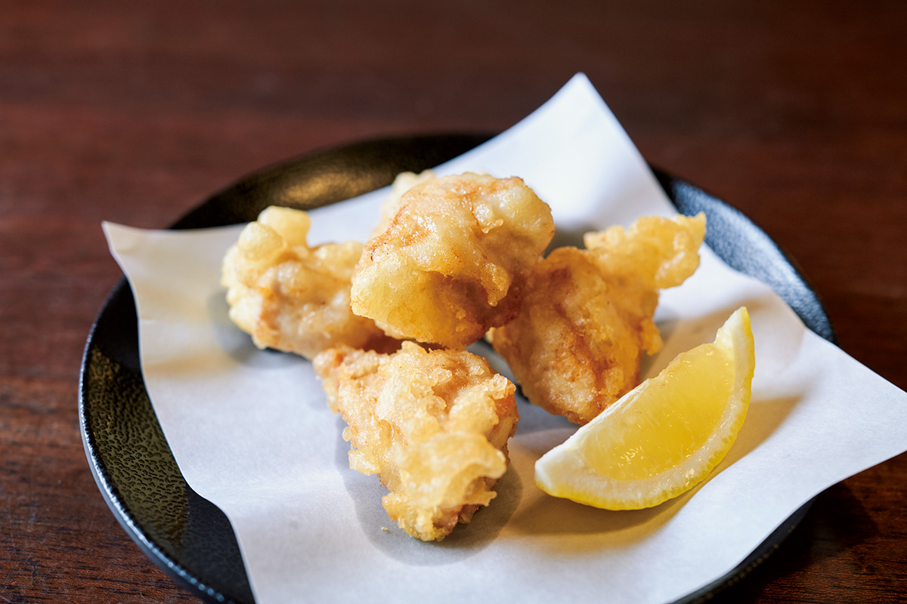

Префектура Кагава · Ясима · Удон и старинные дома
Удонная «Варая» и старинный дом, с которого начался Сикоку-мура

Крестьянский дом с соломенной кровлей у подножия горы Ясима перевезли сюда из соседней префектуры, и именно с него в 1975 году начался музей под открытым небом Сикоку-мура. Сегодня в его стенах варят удон Сануки, толстую пшеничную лапшу, которая считается символом Кагавы.
Корни Сикоку-муры
Удонная, придуманная ради людей
Удонная «Варая» появилась в 1975 году. Придумал её основатель Сикоку-муры. В ту пору он держал транспортную компанию и искал место, где могли бы работать сотрудники, получившие травму или потерявшие силы. «В Кагаве родина удона Сануки. Удонная уж точно получится!» решил он.

Сначала Като собирался поставить на своём участке у подножия Ясимы простое здание в духе народного ремесла, но слег с грыжей межпозвоночного диска. В больнице его и осенило: а что если перевезти сюда настоящий крестьянский дом с соломенной крышей? Выйдя из больницы, он объехал деревни Кагавы и Токусимы в поисках пустующего дома и нашёл в горной деревне в Токусиме постройку конца эпохи Эдо. Дом разобрали и перевезли, а солому для новой кровли укладывали мастера, вызванные из Окаямы.

В удонной, получившей имя «Варая», подают лапшу, сваренную до готовности и сразу отправленную в чашку, а бульон варят на сушёной мелкой рыбе ирико из Сэтоути и водорослях комбу. Сейчас это популярное место: гости идут с самого открытия, в половине десятого утра.

Сейчас заведение занимает два дома, соединённых вместе: второй привезли из соседнего уезда в Кагаве, его построили в начале эпохи Мэйдзи. При обновлении в 2022 году к дому добавили черепичный навес, но сочетание соломы и черепицы для крестьянских домов Сикоку, говорят, обычное дело.
Меню короткое и надёжное. Кроме «сверхбольшого» удона в бадье здесь берут удон с креветкой в кляре за 980 иен, рисовые колобки с овощами и бульоном за 330 иен и жареную курицу тэмпура с лёгкой корочкой и сочным мясом за 700 иен.



Удонная «Варая»
- Адрес
- префектура Кагава, Такамацу, Ясима-Накамати, 91
- Телефон
- +81 87-843-3115
- Часы работы
- 9:30–17:30 (последний заказ в 17:00)
- Выходные
- нет
- Сайт
- wara-ya.co.jp
Фото: Хиромаса Оцука.